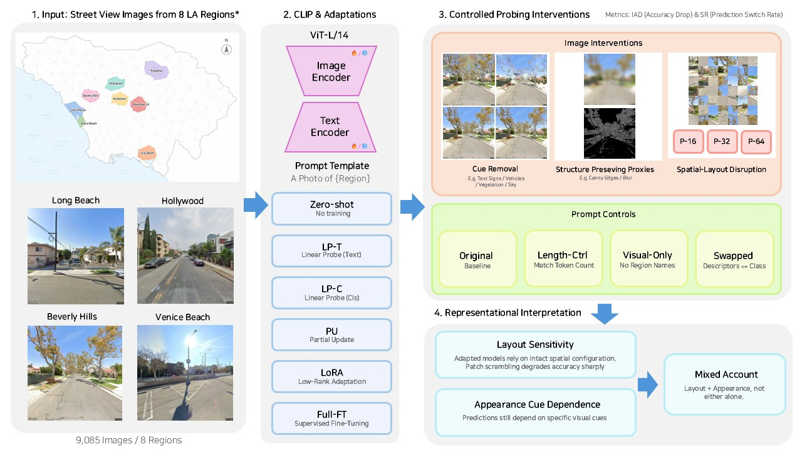
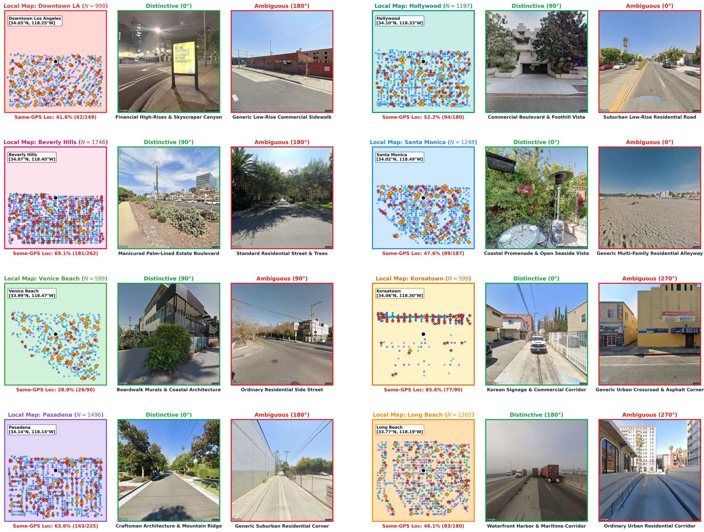
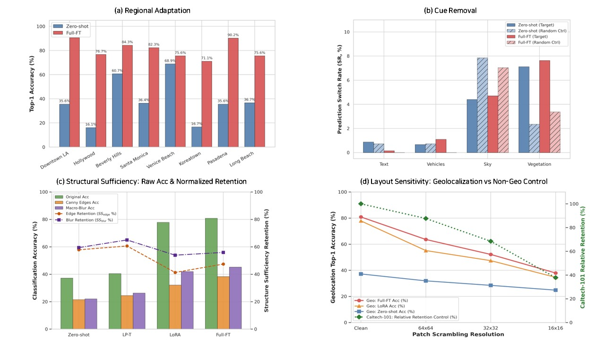
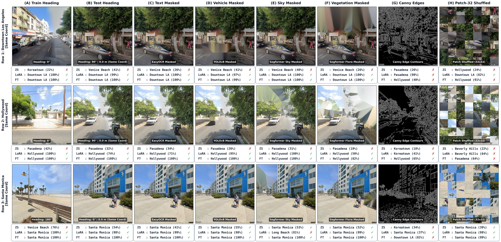
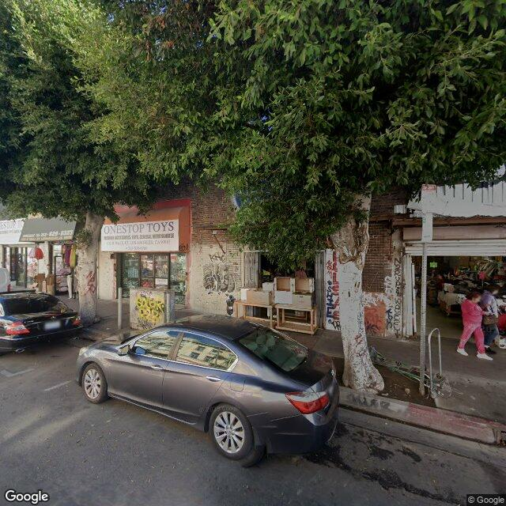

Probing Visual Cues and Scene Configuration After Adaptation
Large collections of street-view imagery provide rich visual information about urban environments, but fine-grained regional geolocalization remains challenging because nearby areas often share coarse geographic cues. We study regional geolocalization within a metropolitan area and ask whether pretrained CLIP features are sufficient for regional discrimination and which visual information supports performance after adaptation.
Using 9,085 street-view images from eight Greater Los Angeles regions, we compare zero-shot CLIP, frozen-encoder readouts (LP-T, LP-C), and encoder adaptation (PU, LoRA, Full-FT). Frozen readouts remain near the 39.03% zero-shot baseline, whereas encoder adaptation achieves 75.94–82.10% accuracy and reduces centroid error from 12.30 km to 3.86 km.
We examine these gains through semantic cue removal, edge and blur transformations, and patch scrambling. Adapted models achieve higher accuracy on appearance-reduced images but do not retain a larger fraction of their original accuracy. They also change predictions more frequently under patch scrambling, while vegetation and sky remain influential. A zero-shot Caltech-101 control shows that scrambling also disrupts generic object recognition. Together, these findings support increased sensitivity to scene configuration alongside continued sensitivity to appearance cues, without establishing that coarse structure alone is sufficient for prediction.
Comparing frozen readouts vs. encoder adaptation on OpenCLIP ViT-L/14, followed by controlled image interventions and zero-shot prompt controls.

Zero-shot, LP-T, LP-C, PU, LoRA, Full-FT), three visual intervention families (Cue Removal, Structure-Preserving Proxies, Spatial-Layout Disruption), and four zero-shot prompt controls (Original, Length-Ctrl, Visual-Only, Swapped).
Area-normalized spatial sampling (ρ* = 194.49 images/km², N = 9,085) with distinctive and visually ambiguous perspectives across eight regions.

Jointly probing regional adaptation gains, cue-removal sensitivity, appearance reduction, and spatial-layout disruption.

SR) under text, vehicle, sky, and vegetation masking alongside area-matched random controls (one-way regional mask-coverage ANOVA p < 0.01 for all cues, led by vegetation F = 35.04 and sky F = 10.93; LoRA SR: 7.92% vegetation, 5.65% sky, 1.83% text, 1.91% vehicles);
(c) Structural Sufficiency: Raw accuracy and normalized retention (SS = Acc(m;T)/Acc(m)) on Canny edge and macro-blur inputs;
(d) Layout Sensitivity: Accuracy degradation across 64×64, 32×32, and 16×16 patch scrambling contrasted with the zero-shot Caltech-101 retention control.
Reported results on OpenCLIP ViT-L-14 across adaptation strategies, prompt controls, structure proxies, and non-geographic scrambling controls.
| Setting | Original Acc. (%) | Centroid Error (km) | Scrambling SR — Patch-16 (%) | Scrambling SR — Patch-32 (%) | Scrambling SR — Patch-64 (%) |
|---|---|---|---|---|---|
| Zero-shot (original) | 39.03 | 12.30 | 12.40 | 8.73 | 5.28 |
| LP-T (Linear Probe — Text) | 41.45 | 12.25 | 14.60 | 9.24 | 6.46 |
| LP-C (Linear Probe — Classifier) | 38.52 | 11.22 | 10.79 | 7.92 | 4.92 |
| PU (Partial Update) | 75.94 | 5.08 | 45.56 | 41.31 | 36.10 |
| LoRA (r = 8, α = 16) | 78.36 | 4.21 | 43.21 | 30.45 | 22.74 |
| Full-FT (Full Fine-Tuning) | 82.10 | 3.86 | 42.92 | 28.69 | 17.24 |
| Zero-shot prompt controls | |||||
| Length-controlled | 38.30 | — | — | — | — |
| Visual-only (no region names) | 36.24 | — | — | — | — |
| Descriptor-swapped | 11.15 | — | — | — | — |
| Input | Model | Accuracy (%) | Retention (SS) |
|---|---|---|---|
| Edges | Zero-shot | 21.5 | 0.55 |
| LoRA | 32.1 | 0.41 | |
| Full-FT | 38.3 | 0.47 | |
| Macro blur | Zero-shot | 22.1 | 0.57 |
| LoRA | 42.0 | 0.54 | |
| Full-FT | 45.2 | 0.55 |
| Condition | Accuracy (%) | Relative Drop (%) |
|---|---|---|
| Clean | 89.65 | 0.00 |
| Patch-16 (14×14 grid) | 33.90 | 62.19 |
| Patch-32 (7×7 grid) | 61.40 | 31.51 |
| Patch-64 (3×3 grid) | 78.60 | 12.33 |
Matched examples from Downtown Los Angeles, Hollywood, and Santa Monica across orthogonal headings, four cue removals, Canny edges, and Patch-32 scrambling.

Select a region and visual intervention below to inspect the transformed Street View image and compare predictions from Zero-shot CLIP, LoRA, and Full-FT.

Coordinates: 34.0457°N, 118.2451°W
@inproceedings{lee2026what,
title={What Does CLIP Learn for Regional Geolocalization? Probing Visual Cues and Scene Configuration After Adaptation},
author={Lee, Changyu and Park, Yeonsoo and Alfarrarjeh, Abdullah and Kim, Seon Ho},
booktitle={Proceedings of the IEEE International Conference on Big Data (BigData)},
year={2026},
note={arXiv:2608.21761}
}